Børn · Alle aldre
Børneværelser
Børneværelset har forskellige funktioner og krav, alt efter alder. Skal der være tid til fordybelse og leg, eller skal der skabes et gamerværelse? Tre børneværelser viser, hvordan samme grundprincipper tilpasses en pige på 3 år, en dreng på 8 år og en pige på 17 år.
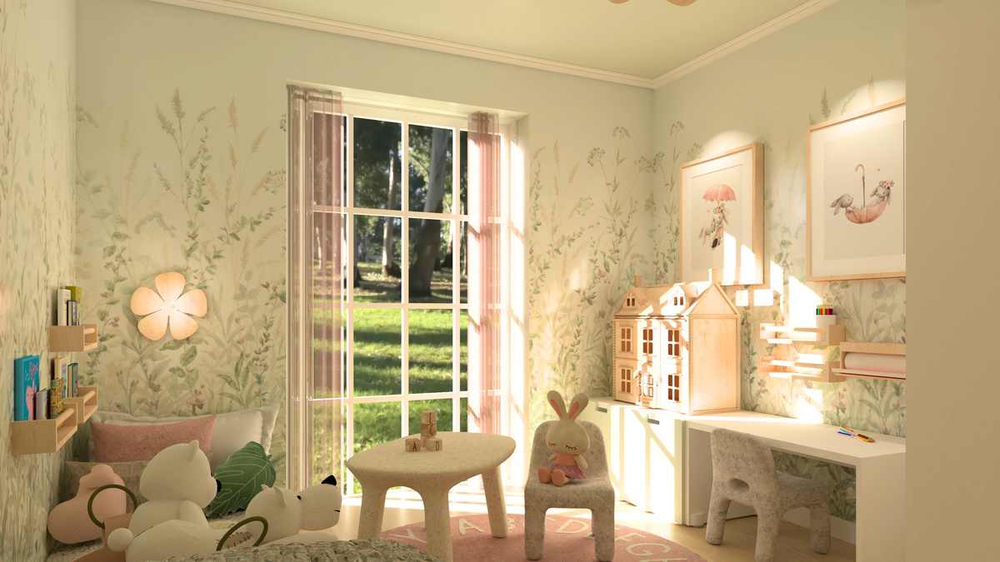
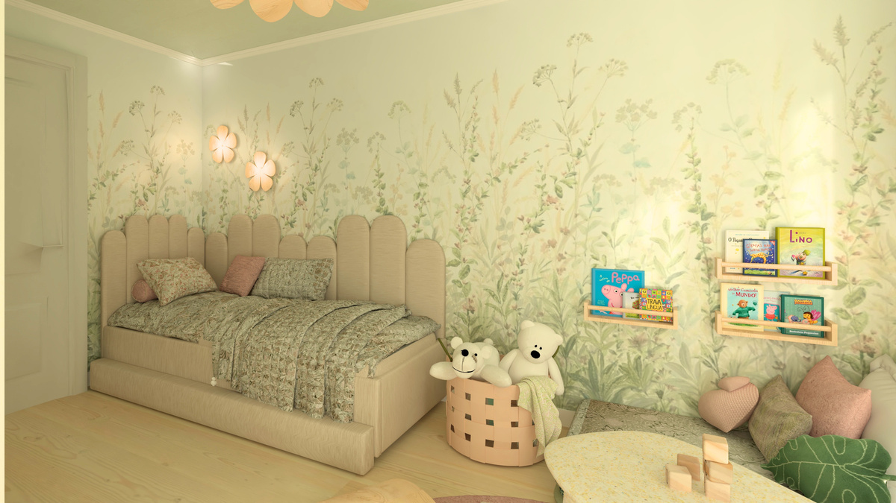
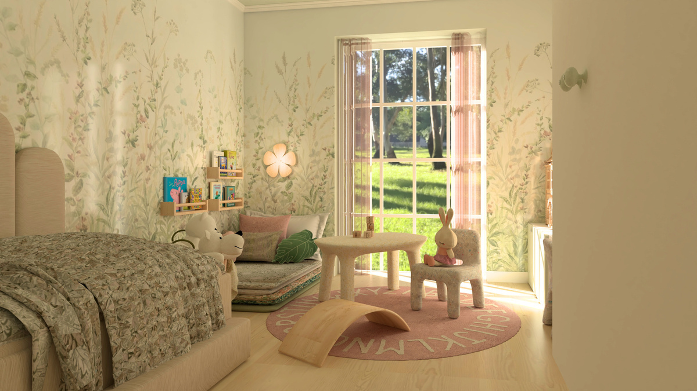
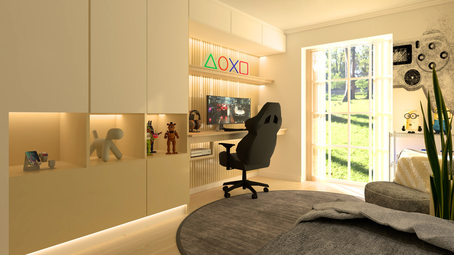
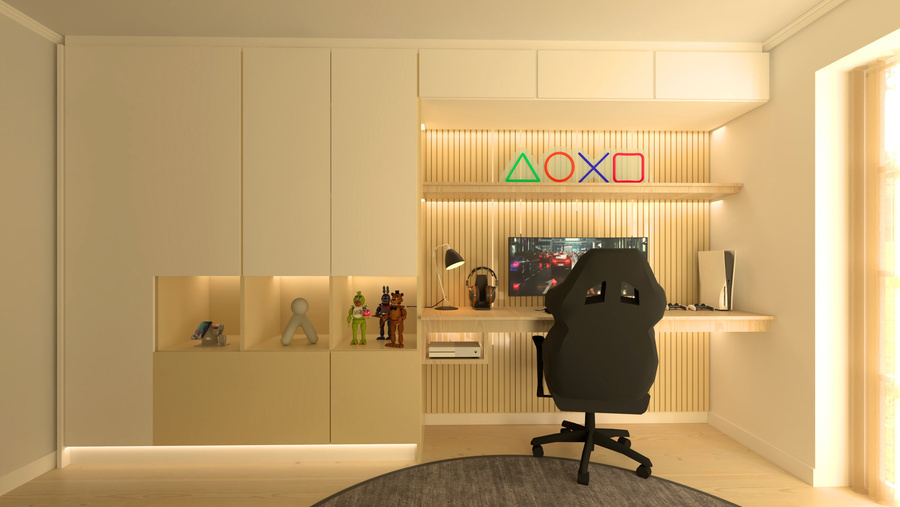
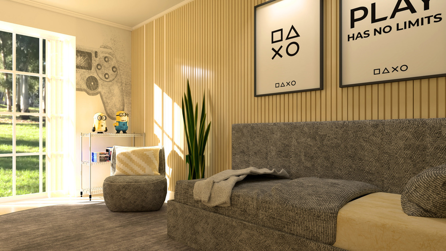
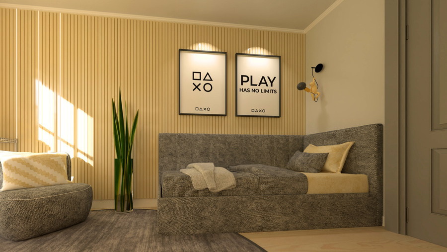
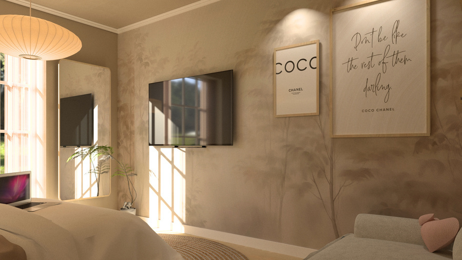
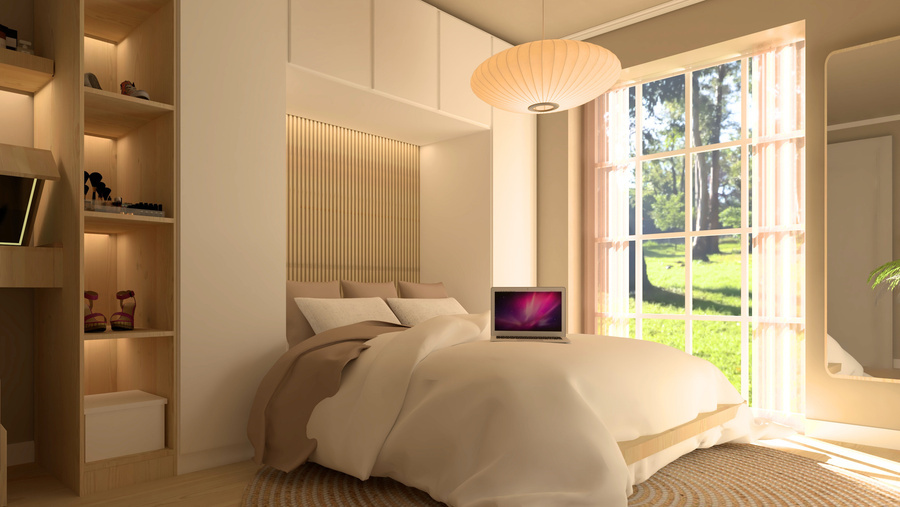
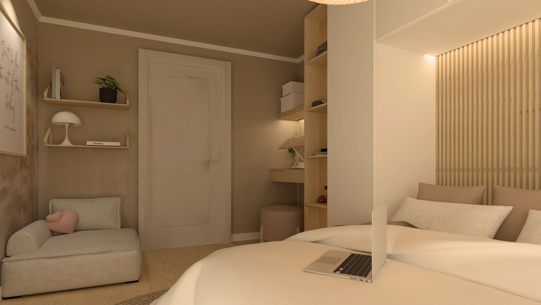
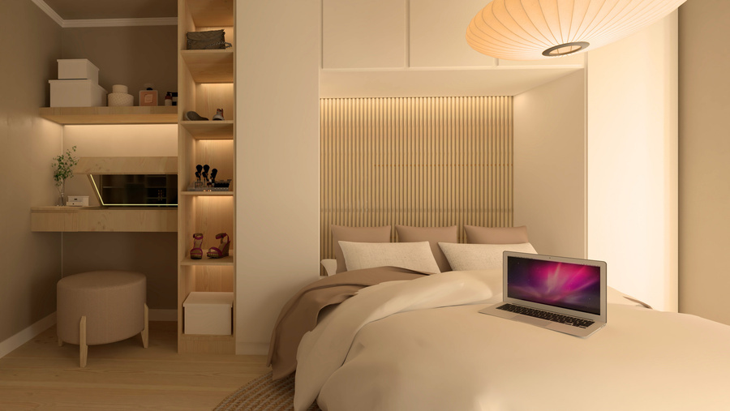